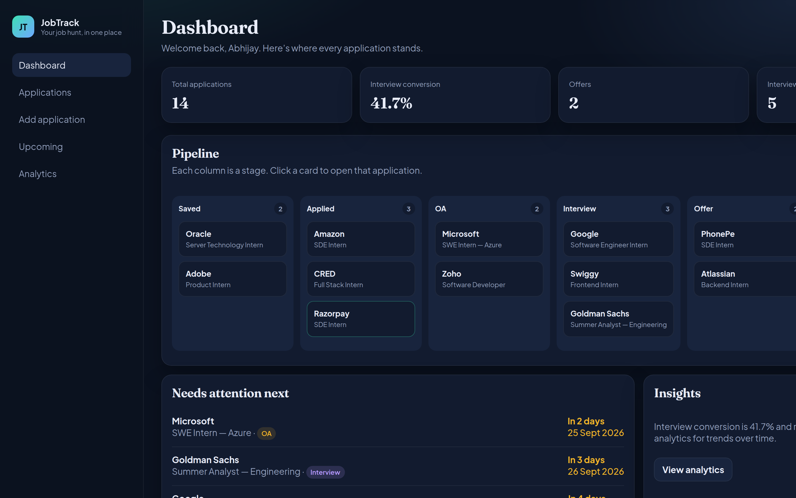

Part 1: User-Defined Application Features
React app flows and backend logic
1.1. Centralized Dashboard
React: client/src/pages/Dashboard.jsx · Backend: GET /api/analytics, GET /api/applications/pipeline, GET /api/applications/upcoming?days=7
Description
The dashboard summarizes the entire application pipeline in one screen — total applications, interview conversion rate, offer count, and interviews due in the next 7 days. It loads analytics, pipeline, and upcoming-interview data in parallel on mount, so the user gets a single at-a-glance view instead of checking spreadsheets or tabs.
Code Snippet
client/src/pages/Dashboard.jsx
useEffect(() => {
Promise.all([
api.get('/analytics'),
api.get('/applications/pipeline'),
api.get('/applications/upcoming?days=7'),
]).then(([a, p, u]) => { setAnalytics(a.data); setPipeline(p.data); });
}, []);Screenshots
1. Dashboard Loaded

Figure 1.1 – Dashboard with application counts, conversion rate, pipeline columns, and upcoming interviews.